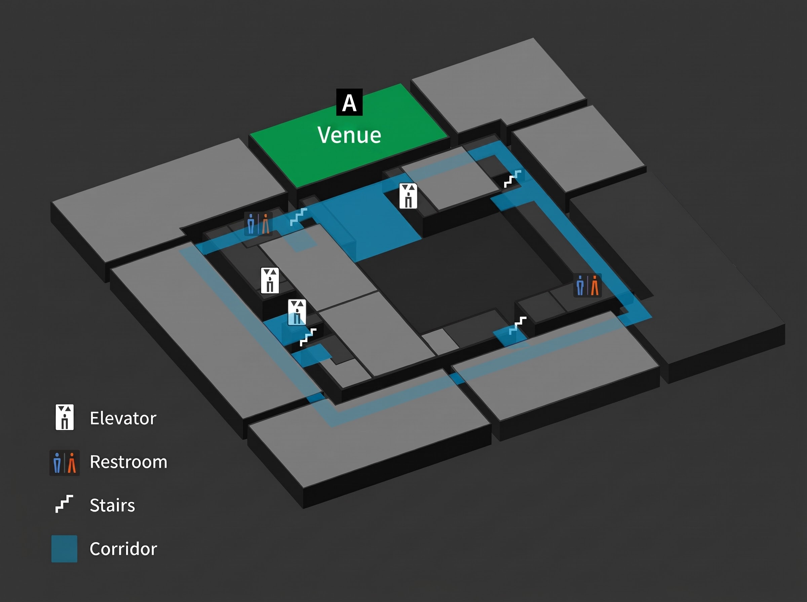

Access
NextGen Hackacase will be held at the Deloitte Tohmatsu Venture Support office in Tokyo, Japan. The address is as follows:
Deloitte Tohmatsu Innovation Park (Google Maps)
〒100-0005 Tokyo, Chiyoda City, Marunouchi, 3 Chome−3−1 Shin-Tokyo Building, 8F
We encourage all participants to arrive via public transit.
Public Transport Access:
- Tokyo Station (JR Lines, Shinkansen, Tokyo Metro Marunouchi Line) - 5 min walk
- Otemachi Station (Tokyo Metro Chiyoda Line, Hanzomon Line, Tozai Line, Mita Line) - 7 min walk
- Yurakucho Station (JR Lines, Tokyo Metro Yurakucho Line) - 10 min walk
- Yurakucho Station (JR Lines) - 3 min walk from the International Forum Exit
- Yurakucho Station (Tokyo Metro Yurakucho Line) - 3 min walk from Exit D5
- Nijubashimae Station (Tokyo Metro Chiyoda Line) - 2 min walk from Exit 1
- Tokyo Station (JR Keiyo Line) - Connected via Exit 6 of the B1F underground concourse
- Tokyo Station (JR Lines) - 5 min walk from the Marunouchi South Exit
To see when to arrive and other details please check the event page and the schedule.
How to Navigate the Venue
Upon arrival at the Deloitte Tohmatsu Innovation Park, please follow the signs to the 8th floor where the event will be held. There will be event staff available to assist you with directions and any questions you may have. The image below shows the layout of the 8th floor. Please proceed to the event venue - Room A.
